{kind=link}
{kind=link}
User Administration
Administrative tools for adding, editing, deactivating, activating, and managing user accounts.
FULL-STACK SOFTWARE • DATABASES • WEB DEVELOPMENT
An evolving full-stack restaurant management platform built with ASP.NET Core MVC, C#, and SQL Server, designed around role-based restaurant operations, administration, customer workflows, and database-backed business processes.
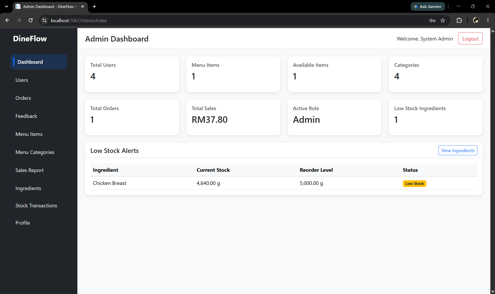
In Development01 • OVERVIEW
DineFlow grew from earlier restaurant management coursework into a personal full-stack application that I could continue developing beyond the original academic requirements.
The project focuses on creating a structured restaurant management environment where different users interact with the same underlying system through role-specific interfaces and database-backed workflows.
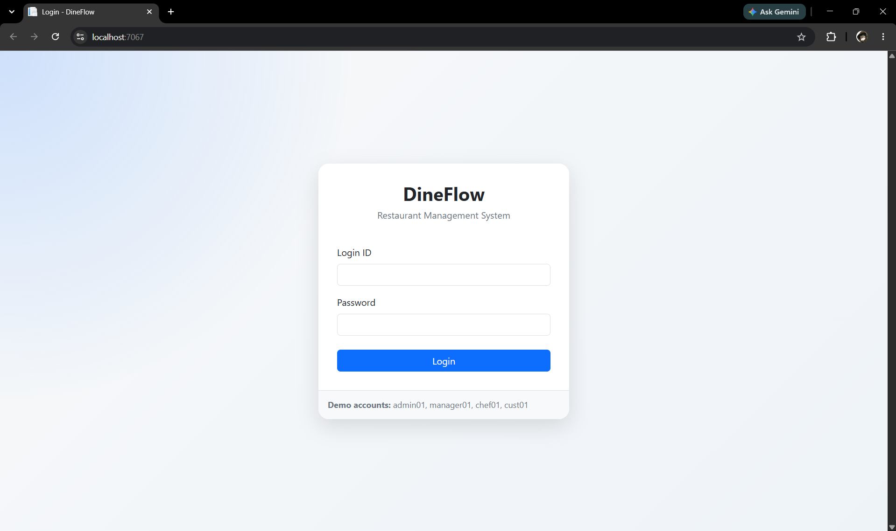
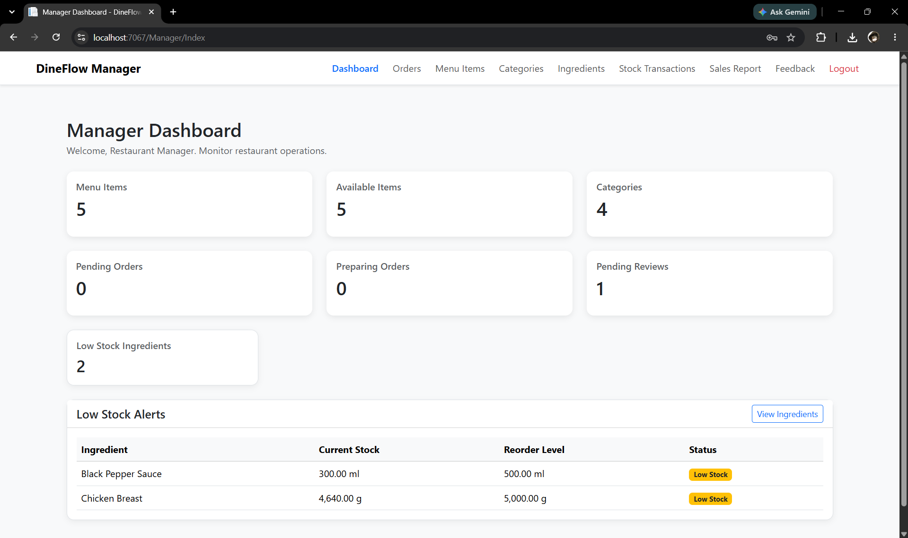
02 • OBJECTIVE
The goal is to create a restaurant management system where administrative tasks, restaurant operations, user accounts, menu data, orders, feedback, and future inventory workflows can operate together as parts of one application.
Rather than treating every screen as an isolated feature, DineFlow is being developed around shared data models, role-based permissions, reusable application logic, and relationships between restaurant processes.
03 • APPLICATION ARCHITECTURE
Users interact with role-specific pages through the web application interface.
Controllers process requests, coordinate application logic, and determine which views and data should be returned.
Restaurant entities, user roles, operational rules, and business processes are represented through the application's data and logic layer.
Persistent restaurant, user, order, and application data is stored and retrieved through a relational database.
04 • CURRENT IMPLEMENTATION
Administrative tools for adding, editing, deactivating, activating, and managing user accounts.
Different restaurant roles are designed to access different parts of the system depending on their responsibilities.
A central administration area for accessing restaurant management information and operational tools.
Profile functionality for displaying and managing administrator account information.
Application information is persisted through SQL Server rather than being limited to temporary in-memory data.
User management includes soft deletion and controlled permanent deletion where account dependencies allow it.
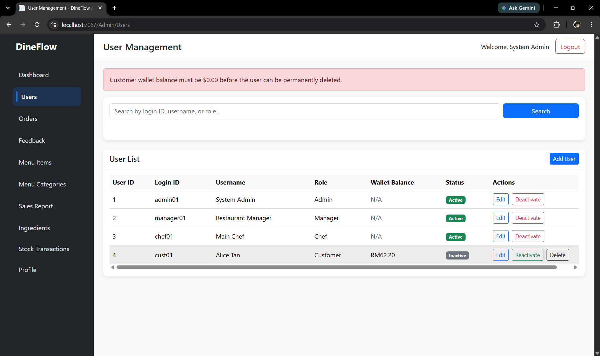
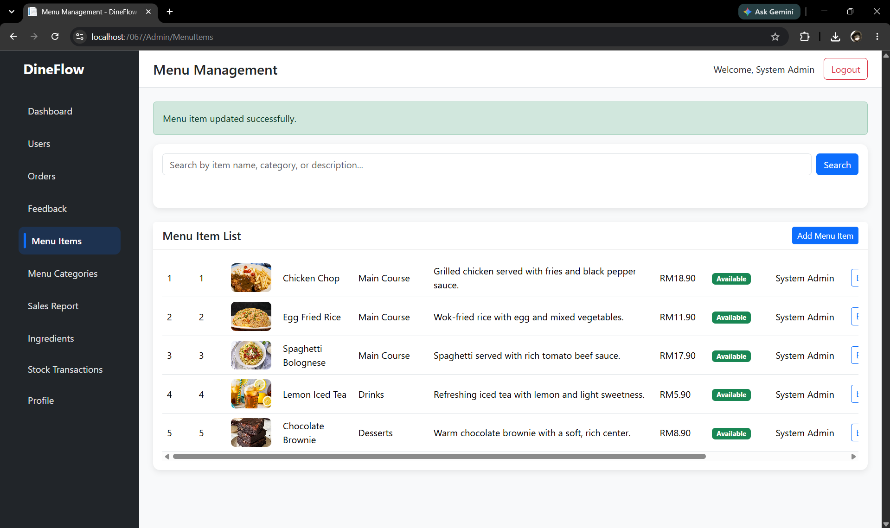
05 • ORDERING WORKFLOW
DineFlow connects customer-facing ordering with staff-side kitchen operations. Customers browse available menu items, choose quantities, place paid orders, and track their status while kitchen staff process active orders through the restaurant workflow.
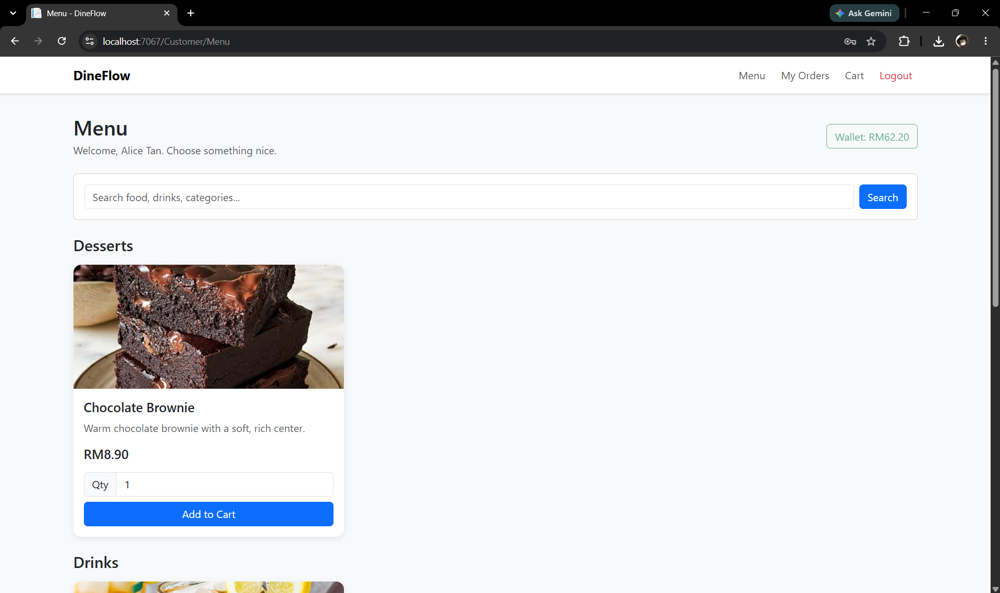
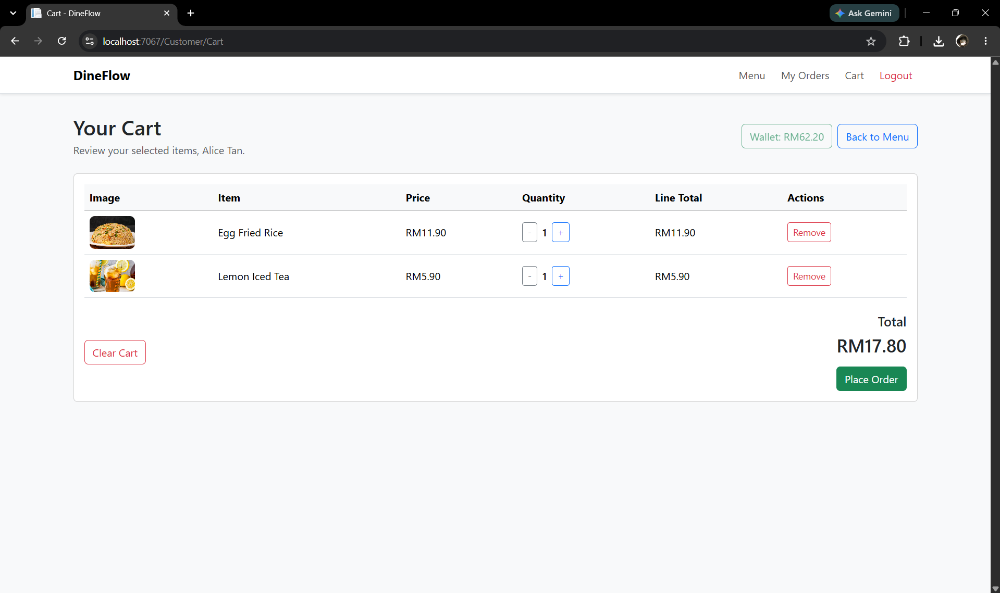
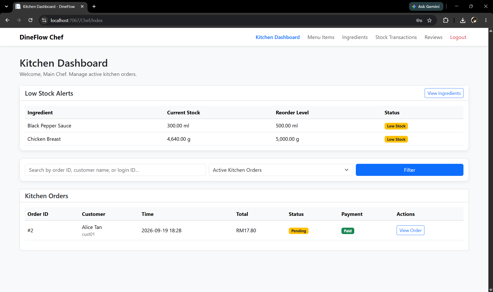
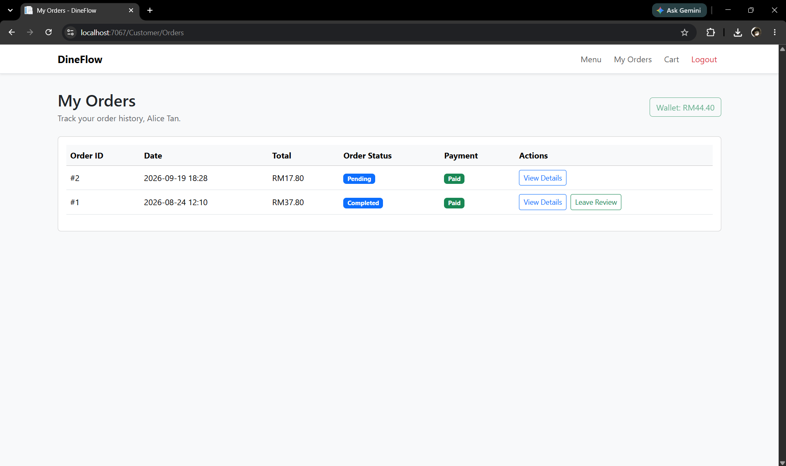
05 • TECHNOLOGY
Provides the main application architecture for routing, controllers, server-side logic, and Razor-based views.
Used for backend application logic, models, validation, database-related operations, and controller workflows.
Stores relational restaurant and account data used throughout the application.
Used to structure and style the user-facing web interface and role-specific application pages.
Supports client-side interactions and interface behaviour where dynamic browser functionality is useful.
Used for source control, project history, and maintaining the application repository.
INVENTORY & RECIPE SYSTEM
Menu items are linked to recipes that define the ingredients and quantities required to prepare each item. Stock availability is checked before ordering, and completing an order automatically deducts the corresponding ingredient quantities.
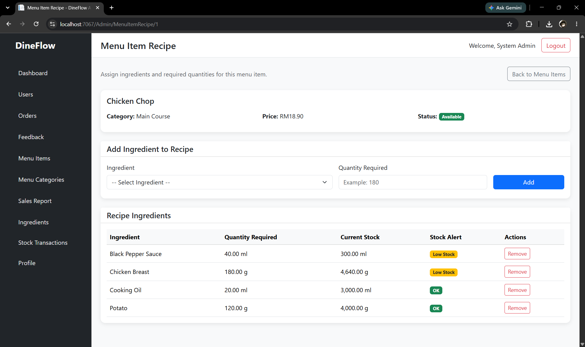
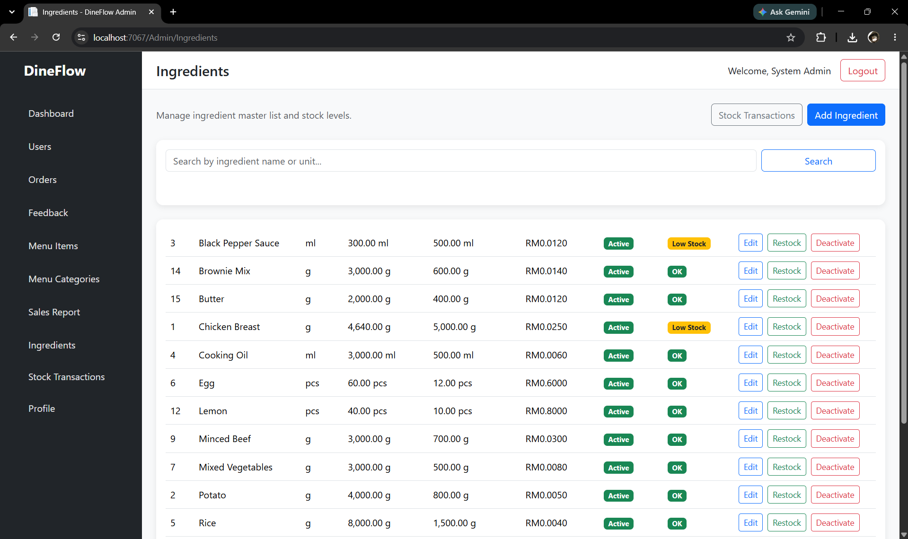
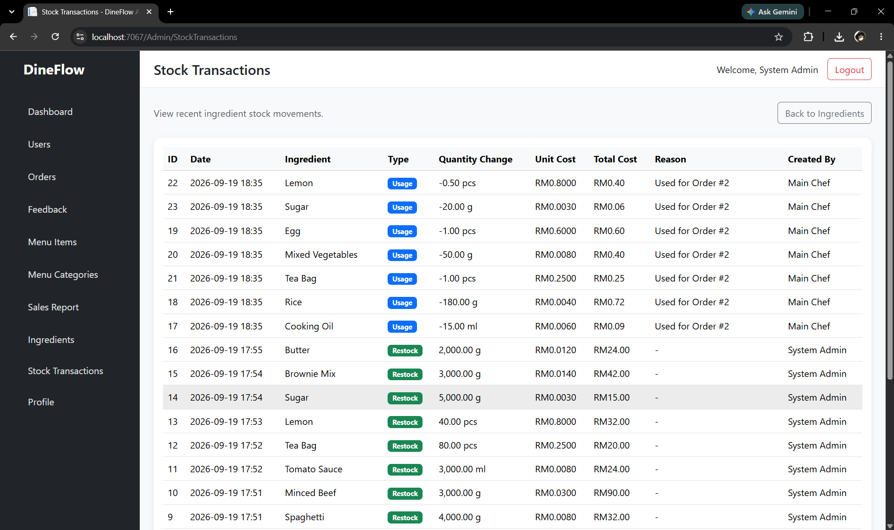
06 • CHALLENGES
Restaurant management features are strongly connected. Changes to users, roles, orders, menu items, or other records can affect several areas of the application, which makes data relationships important.
Permanently deleting users cannot be treated as a simple database delete when related records such as orders or wallet data may still depend on the account.
Expanding an academic application into a larger personal project required restructuring features so that future modules could be added without treating the application as a collection of disconnected pages.
07 • CURRENT STATE
DineFlow now serves as an ongoing software engineering project where I can continue implementing larger workflows, improving application structure, and experimenting with features that go beyond the scope of the original academic restaurant system.
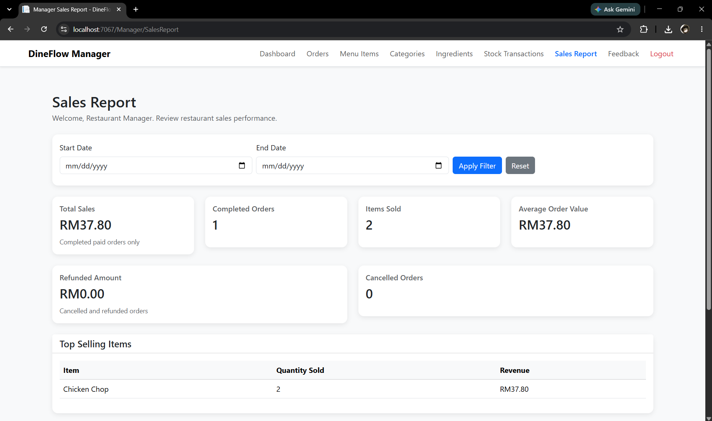
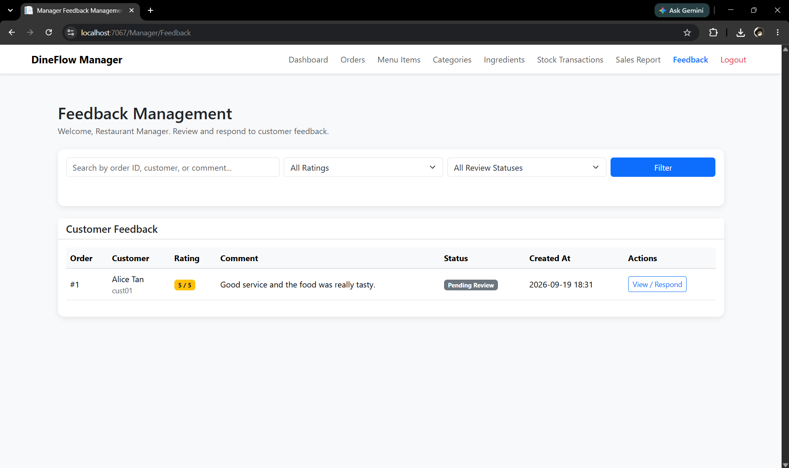
08 • WHAT I LEARNED
One of the most useful lessons from DineFlow has been that adding individual screens is usually the easy part. The harder part is deciding how users, permissions, database records, and business rules interact across the whole application.
The project has also given me more practical experience with maintaining an evolving codebase rather than building a one-time assignment and leaving it unchanged after submission.
09 • PLANNED EXPANSION
Link menu item availability to ingredient quantities and maintain stock movement records.
Track operational inflow and outflow so restaurant activity can be analysed alongside sales.
Allow customers to submit reservation requests while restaurant staff manage tables, dates, party sizes, and reservation status.
Support food images that authorised restaurant staff can upload, change, or remove for customer ordering.
Expand customer feedback features and make relevant reviews available to restaurant staff such as chefs.
Provide chef-facing tools for creating and managing menu-related restaurant data.
{kind=link}
{kind=link}
{kind=link}
{kind=link}
{kind=link}
{kind=link}
{kind=link}
{kind=link}
{kind=link}
{kind=link}
{kind=link}